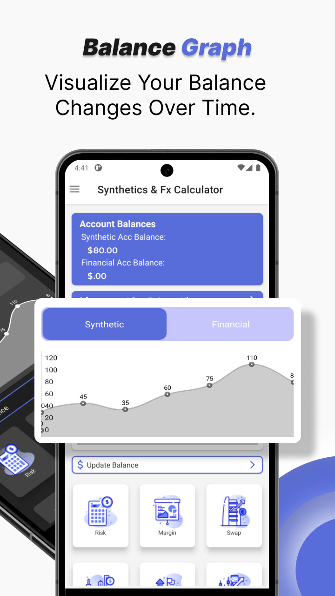
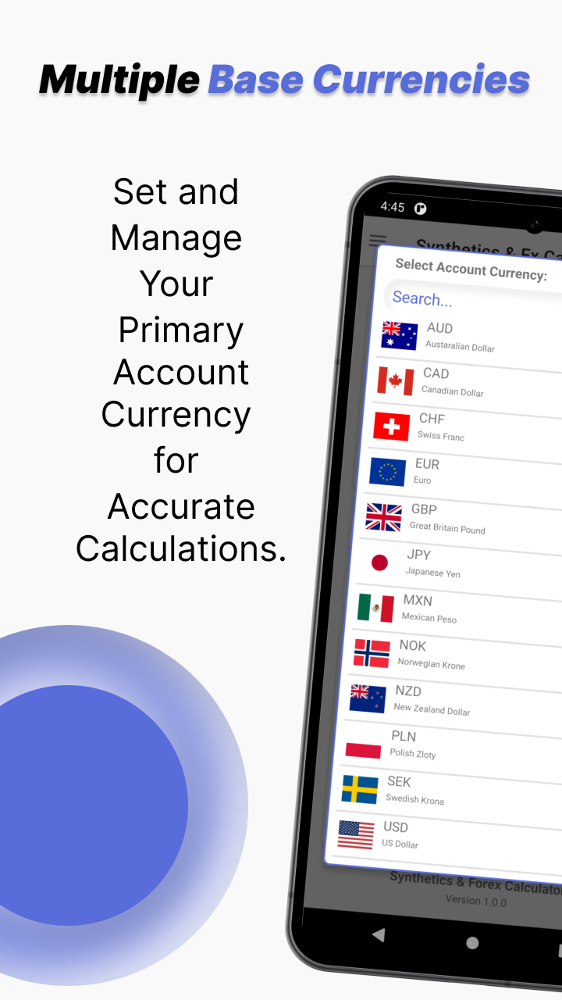
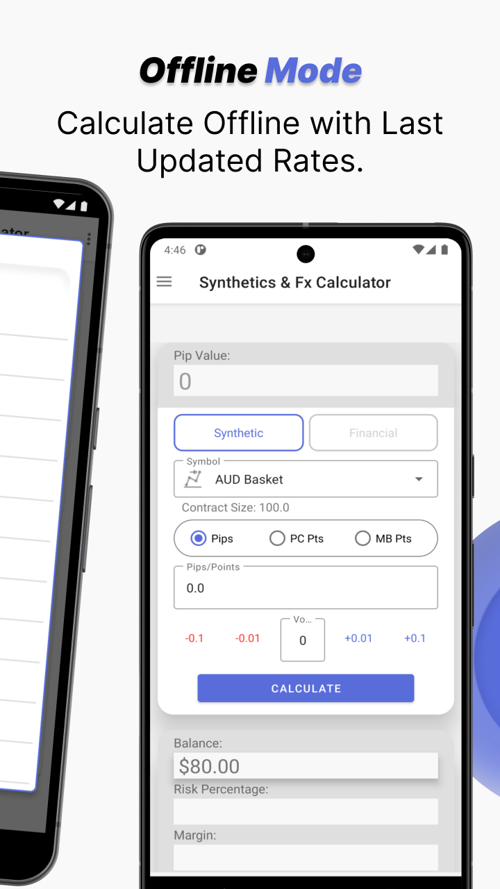

Synthetics & Forex Calculator
A precision trading companion built for Synthetics and Forex traders who refuse to leave their numbers to chance. It turns the tedious, error-prone math behind every trade into instant, reliable answers — so traders can focus on strategy, not arithmetic.
A short walkthrough of the app in action.
The Problem
Trading the financial markets involves constant calculation. Before placing a single order, a trader needs to know exactly how much they stand to risk, how much they could gain, where to set their stop loss and take profit, and what their position size should be. Getting any of these wrong — even by a small margin — can be the difference between a disciplined trade and a costly mistake.
Most traders juggle several disconnected tools, spreadsheets, and mental math to work this out. The Synthetics & Forex Calculator brings all of it into one clean, purpose-built mobile app — accurate, fast, and tailored to the way real traders work.
7+
Calculation tools in one app
Live
Real-time prices for popular symbols
Android
Available on the Google Play Store
Key Features
Everything a trader needs to size a position and manage risk — without leaving the app.
Real-Time Prices
Access up-to-date prices for popular symbols, including metals like Gold and indices like US30, so calculations always reflect current market conditions.
Stop Loss & Take Profit
Six different calculation modes help traders set protective stops and profit targets that match their exact strategy and risk appetite.
Pip Calculator
Input point values from both mobile and desktop platforms for accurate risk and profit calculations down to the pip.
Pivot Point Calculators
Includes Floor, Woodie, Camarilla, Demark, and Fibonacci methods, giving traders the flexibility to follow varied strategies.
Commission Calculator
Tailored for traders using zero-spread accounts, ensuring trading costs are factored in for truly accurate profit and loss figures.
Custom Asset Settings
Enter specifications such as swap rates, spread, leverage, and contract sizes for fully personalised calculations on any instrument.
Leverage Calculator
Provides accurate margin cost estimations, helping traders understand exactly how much capital a position ties up before they commit to it.
A Look Inside
Screenshots from the app.



Try it on your phone
The Synthetics & Forex Calculator is free to download on the Google Play Store. Get precise, reliable trading calculations wherever the market takes you.
Get it on Google Play